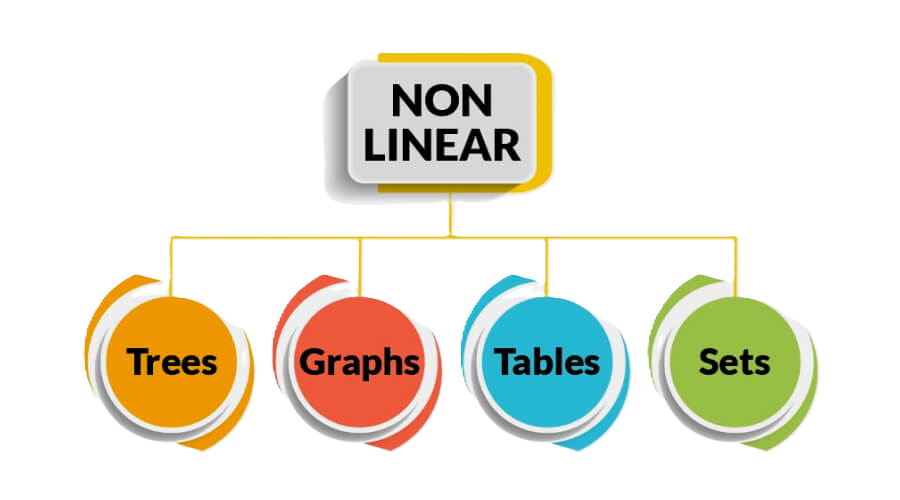

Data Structure
A data structure is a method for efficiently arranging and storing data on a computer. Data structures assist programmers in managing and manipulating data in their applications in a similar way to how a filing cabinet arranges files for convenient access.
Think of a library as a data structure.
A data structure is like a system for organizing information.
- Books in the library represent the information or data we want to keep.
- The library system: how the books are arranged on shelves, sorted into categories, or listed in a catalog(menu) acts as the data structure.
- Author (who wrote it)
- Genre (type of book, like fiction or nonfiction)
- Title (the name of the book)
In a library, books can be organized in different ways, like by:
This organization makes it easier for people to find and borrow books quickly. Similarly, in computer programming, different types of data structures (like arrays, linked lists, or trees) help us organize and manage data efficiently, so we can access and change it easily.
So, just like a well-organized library helps you find books faster, a good data structure helps computers work with data more effectively.
Types Of Data Structures
There are many different types of data structures, each with its own special purpose. Some are good for storing lists of things, while others are better for organizing information in a tree-like structure. By using the right data structure, we can make it easier to find, add, or remove information.
Basically we considder two types of data Structures they are :
- Linear Data Structures
- Non Linear Data Structures
- Linear Data Structures
- Array.
- Linked List (Singly, Doubly, Circular).
- Stack.
- Queue (Simple Queue, Circular Queue, Priority Queue).
- Non Linear Data Structures
- Tree (Binary Tree, Binary Search Tree, AVL Tree, Heap, B-Tree).
- Graph (Directed Graph, Undirected Graph, Weighted Graph, Unweighted Graph).
- Tables.
- Sets.
A linear data structure is a type of data structure where data elements are arranged in a sequence or line. In a linear data structure, each element is connected to its previous and next element, and data is accessed in a sequential manner.
Types of Linear Data Structures:
A non-linear data structure is a type of data structure where data elements are not arranged sequentially or in a linear order. Instead, data is organized in a hierarchical or interconnected manner, allowing multiple paths for traversal and access. Unlike linear structures, where elements follow a sequence, non-linear structures have relationships that can branch in different directions.
Types of Non-Linear Data Structures:

Linear Data Structure
A linear data structure is a type of data structure where data elements are arranged in a sequence or line. In a linear data structure, each element is connected to its previous and next element, and data is accessed in a sequential manner.
Characteristics of Linear Data Structure:
- Sequential Organization:
In a linear data structure, the elements are arranged one after another in a straight line. Each item (except the first one) has something that comes before it, and each item (except the last one) has something that comes after it. - Order Preservation:
The order in which you add elements stays the same. So, the first item you add is the first one you can access or remove, and the last item you add is the last one you can access or remove. - Fixed or Dynamic Size:
Linear data structures can be either a fixed size or change size. For example, arrays have a fixed size, while structures like linked lists, stacks, and queues can grow or shrink as needed when you add or remove elements. - Efficient Access:
Getting items from a linear data structure is usually quick and easy. For instance, in an array, you can access any item instantly if you know its position (index).
Advantages of Linear Data Structures
- Easy to access data:
You can quickly get to any element by its position in the sequence. - Flexible size:
Linear data structures can grow or shrink as you add or remove elements. - Easy to set up:
It's simple to create linear data structures using arrays or linked lists. - Useful for many tasks:
Linear data structures are great for things like searching, sorting, and organizing data. - Straightforward algorithms: Many of the algorithms used with linear data structures are simple and easy to understand.
Disadvantages of Linear Data Structures
- Limited access to data:
It can take longer to access elements that aren’t at the beginning or end of the sequence. - Extra memory use:
Linked lists, stacks, and queues need extra memory to store links or pointers between elements. - Complex algorithms:
Some tasks like searching and sorting can be more complicated and take more time in linear data structures. - Wasted memory:
If there are gaps in how memory is allocated, linear data structures can waste space. - Not ideal for quick access:
Linear data structures aren't the best choice when you need to quickly access random elements, like finding something in a large dataset.
Non-Linear Data Structure
In non-linear data structures, the data elements are not arranged in a straight line or sequence. This means you can't go through all the elements in just one pass. Non-linear structures are more complex to set up than linear ones, but they use computer memory more efficiently. Examples of non-linear data structures include trees and graphs.
Characteristics of Non-Linear Data Structure:
- Hierarchical Organization:
Data is organized in levels, where elements can have parent-child relationships (e.g., trees). - Multiple Paths for Traversal:
You can access elements through different paths, not just in one sequence. - Efficient Memory Utilization:
Non-linear structures use memory efficiently by avoiding gaps, unlike linear structures. - Complex to Implement:
Non-linear data structures are harder to set up and manage compared to linear ones. - Supports Complex Relationships:
They are ideal for representing complex relationships, such as networks or family trees (e.g., graphs).
Advantages of Non-Linear Data Structures:
- Efficient Memory Use:
They utilize memory more effectively by not requiring contiguous memory blocks. - Complex Relationships:
Non-linear structures are great for representing complex relationships, like hierarchical data (trees) or networks (graphs). - Multiple Traversal Options:
You can traverse elements in different ways, allowing for more flexible data management. - Faster Searching:
Searching for specific elements can be faster in certain non-linear structures, like trees. - Supports Multi-level Hierarchy:
Non-linear structures are ideal for data that needs multi-level representation, such as organizational charts or file systems.
Disdvantages of Non-Linear Data Structures:
- Complex Implementation:
They are harder to implement and manage compared to simpler linear structures. - Difficult Traversal:
Accessing and traversing all elements can be more complicated and time-consuming. - Higher Memory Overhead:
Maintaining relationships (like parent-child or node connections) requires additional memory. - Algorithm Complexity:
Some operations, such as inserting or deleting elements, can be more complex and slow in non-linear structures. - Requires Advanced Knowledge:
Understanding and working with non-linear structures often requires more advanced programming skills.
Differences between Linear and Non-Linear Data Structures
| S.No | Linear Data Structure | Non-linear Data Structure |
|---|---|---|
| 1 | Data elements are arranged in a linear order, with each element connected to its previous and next neighbor. | Data elements are arranged hierarchically, with elements connected in a branching structure. |
| 2 | Only a single level of organization is involved. | Multiple levels of organization are involved. |
| 3 | Easier to implement compared to non-linear data structures. | More complex to implement compared to linear data structures. |
| 4 | All elements can be traversed in a single pass. | Elements cannot be traversed in just one pass. |
| 5 | Memory usage is not very efficient. | Memory is used more efficiently. |
| 6 | Examples: Arrays, Stacks, Queues, Linked Lists. | Examples: Trees, Graphs. |
| 7 | Mainly used in software development for simple applications. | Used in areas like Artificial Intelligence and image processing. |
| 8 | Best for storing and manipulating simple data. | Best for representing complex relationships, like social networks or file systems. |
| 9 | Good performance for simple operations but slower for searching or modifying elements in the middle. | Performance varies depending on the structure and operation, and can be optimized for specific tasks. |
Applications of Linear and Non-Linear Data Structures
| Application | Description |
|---|---|
| Array | Used for storing multiple items of the same type, allowing for efficient access via indexing. |
| Linked List | Used for dynamic memory allocation where elements can be easily added or removed. |
| Stack | Used in function call management, expression evaluation, and backtracking algorithms. |
| Queue | Used in scheduling processes, managing requests in a web server, and breadth-first search algorithms. |
| Tree | Used in hierarchical data representation like file systems, organization structures, and databases. |
| Graph | Used for network routing, social network analysis, and mapping relationships between data points. |
Advantages and Disadvantages of Data Structures
| Advantages | Disadvantages |
|---|---|
| Efficient data management: Data structures help organize and manage data efficiently. |
Complexity: Some data structures can be complex to implement and understand. |
| Improved performance: Certain data structures can optimize performance for specific operations. |
Memory consumption: Some data structures may require more memory than others. |
| Faster access: Data structures like hash tables provide faster access times. |
Difficulty in choosing: Selecting the appropriate data structure for a specific task can be challenging. |
| Reusability: Data structures can be reused in different programs or systems. |
Overhead: Some data structures may introduce overhead due to additional features. |
| Encapsulation: Data structures can encapsulate data and provide a clear interface. |
Algorithm dependency: The efficiency of operations may depend on the underlying algorithms used. |
Test Your Knowledge
1. What is a data structure?
2. Which of the following is NOT a linear data structure?
3. What is a characteristic of linear data structures?
4. Which of the following is an example of a non-linear data structure?
5. Which of the following is a benefit of using data structures?
6. In a stack, which operation is used to remove an element?
7. Which of the following data structures uses LIFO (Last In First Out) principle?
8. Which operation is performed to add an element to a queue?
9. What is the primary purpose of a linked list?
10. Which of the following statements about trees is true?